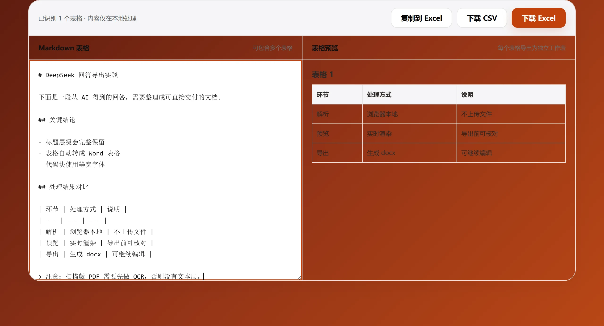

Paste a Markdown table
Works with tables copied from AI answers, MD files, or your editor.
Free online table tool
Turn Markdown tables from ChatGPT, Claude, and other AI answers into editable Excel or CSV files. No sign-up — processing stays in your browser.

How to use
Works with tables copied from AI answers, MD files, or your editor.
Multiple tables are recognized automatically; text, numbers, empty cells, and line breaks are preserved.
Multiple tables land in separate XLSX worksheets; CSV exports the first table.
FAQ
Parsing and export both happen in your browser.
Yes. Excel downloads put each table in its own worksheet; CSV download and copy use the first table.
Check that the row under the header uses at least three hyphens, e.g. | --- | --- |.
No. XLSX preserves text as-is, and CSV files include a UTF-8 BOM so Excel renders non-ASCII characters correctly.
No. Parsing and file generation happen entirely in your current browser.
Escape pipes inside cells with a backslash; HTML <br> tags become in-cell line breaks on export.
Related tools
Excel / CSV to Markdown → Markdown to Word → Markdown to PDF →
Use cases
Markdown tables are read-only; exporting to xlsx unlocks formulas and pivot tables.
They open a normal spreadsheet — no syntax lesson required.
Excel filters beat manually scanning text every time.
Limits
Markdown has no rowspan/colspan syntax — merge cells in Excel afterwards.
Numbers are written as cell content; verify number formats before writing formulas.
Colors, borders, and number formats are outside what Markdown can express.
More tools